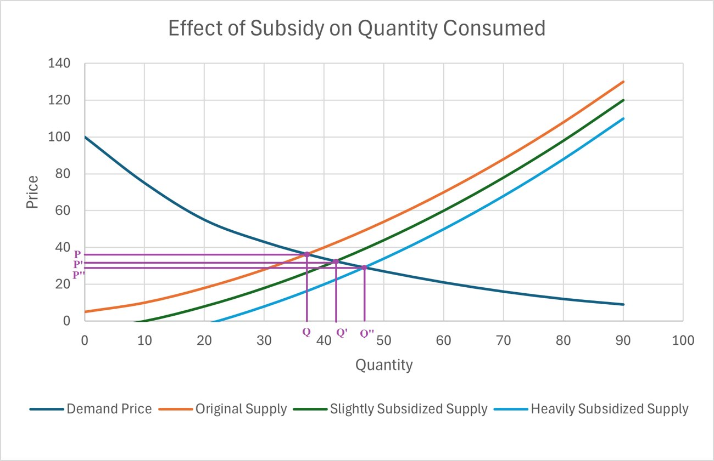
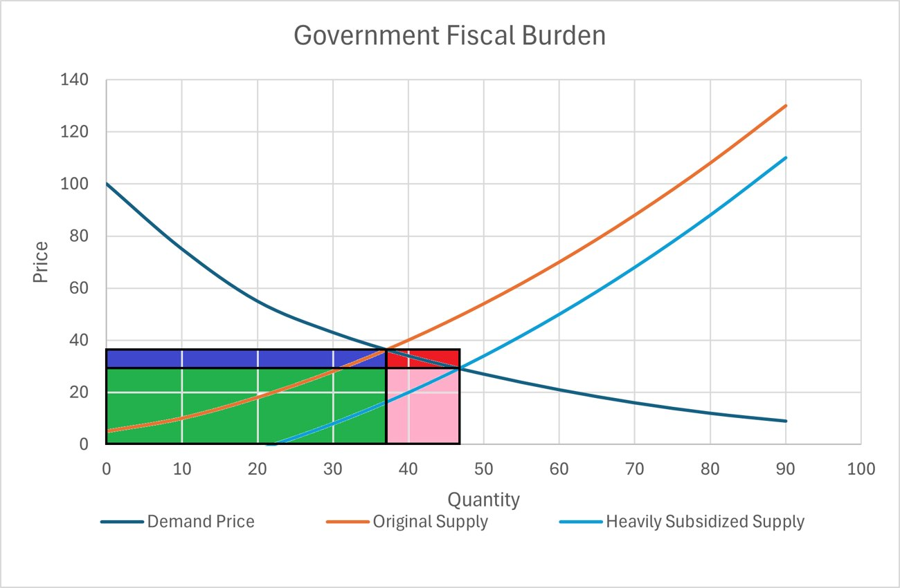

ECON 4051 · Spring 2026 · final paper
Subsidies or cash transfers?
Are targeted cash transfers always better than blanket subsidies? Not always. It depends on the country, and Egypt needs both.
The question
With high inflation and weak job markets, governments across the Middle East spend heavily on keeping households afloat. The traditional tool is a blanket subsidy on food and energy; the newer one is a cash transfer to households that qualify. The common view is that cash transfers are simply better. I argue it depends on the country.
Blanket subsidies: simple, but leaky
A subsidy needs no way of identifying who is poor, so it works in countries with weak administration and widespread poverty. Some goods even target themselves: Egypt's baladi bread is eaten mostly by poorer families, so most of that subsidy reaches them.
Energy is the opposite. Richer households have bigger homes, more appliances and more cars, so they use more fuel and electricity and collect most of the subsidy. And a lower price makes everyone use more, which the government also pays for.


Cash transfers: better targeted, if the targeting works
Egypt's Takaful and Karama program picks households with a proxy means test: a regression model on assets, housing and household data, since many incomes are informal and hard to measure.
It is not all positive: paying families to send children to school can lower learning when schools have no room for the extra pupils, and in high inflation the transfers lose value fast unless they are raised often.
What I recommend for Egypt
Keep both, and make each more efficient, gradually:
- Fuel: cut diesel subsidies first (mostly used by transport and business), and cut gasoline alongside incentives for electric cars.
- Electricity: reduce subsidies step by step while supporting rooftop solar, so demand on the grid falls.
- Cash transfers: better household data, and payments linked to a price index of what poor households actually buy.
- Long term: link some transfers to vocational training, technical education or girls' schooling.